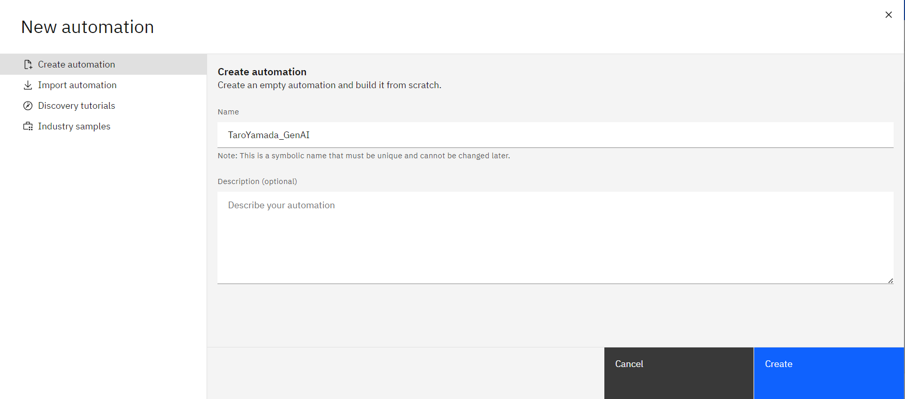
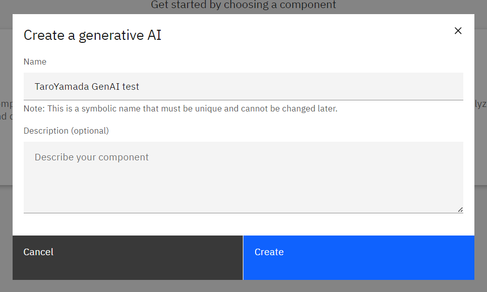
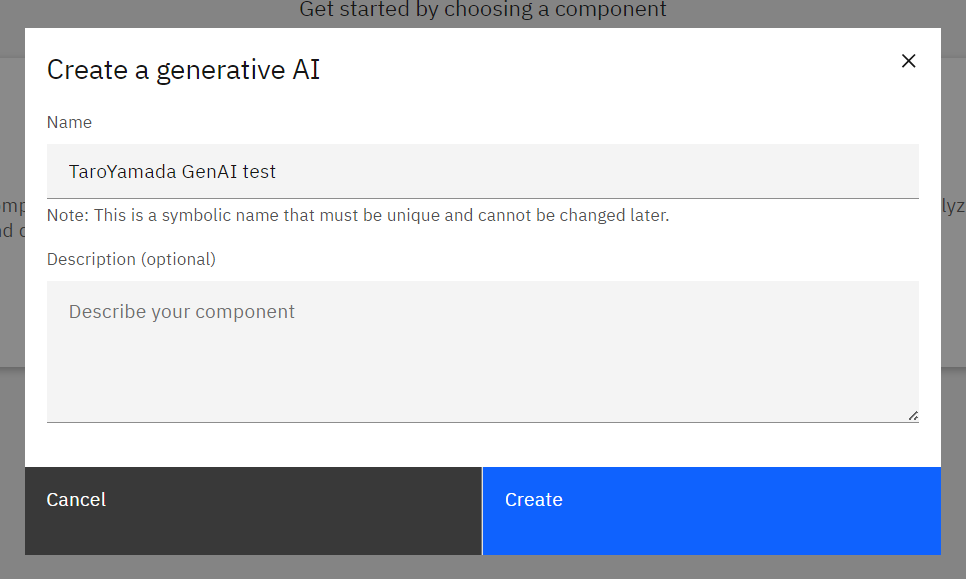

Automation builder (生成AI)
Automation Builderでは、ワークフローやルールエンジンに加え、生成AIのプロンプトを作成することができます。
前提条件
- watsonx Orchestrateの環境にアクセスできること。
- IBM-idを用いてログイン可能であること。
Automation (生成AI) を作成してみよう
Automation builder では、Lab3 と同様に Automation のアプリケーションを作成し、生成AI のプロンプトを作成できます。
-
メニュー(≣)から Automations を選択します。

-
Create automation + をクリックし、新規の Automation を作成します。

-
Create automation のウィンドウで、名前の欄に YourName-GenAI と入力し、Create をクリックします。
 -
生成AIを選択します。
 名前を YourName GenAI test と入力して、Create をクリックします。

名前を YourName GenAI test と入力して、Create をクリックします。

{kind=link}
{kind=link}
こちらで、Automation と 生成AIのコンポーネント が作成されました。作成されると、プロンプト・エディターが開きます。
プロンプトを作成してみよう
プロンプト・エディターを用いて、プロンプトを作成し、出力を生成することができます。
-
Model: のプルダウンメニューから、使いたいモデルを選択します。
-
プロンプトを作成します。
-
(オプション) Context にモデルへの指示文を入力します。
-
(オプション) Pronpt input にモデルに応答してほしい文章を入力します。
-
(オプション) 変数を追加します。 変数は、生成AIの入力として使用されます。変数を使用しない場合も、少なくとも1つの変数を定義する必要があります。
- Variable の欄で New variable をクリックします。
- 変数に名前を付け、デフォルト値を入力します。 変数の名前と値は String でなければなりません。
- Prompt Input または Context の欄で、プロンプトに変数を挿入します。
- 変数名は、二重の中括弧 {} で囲む必要があります。 (例: {{topic}})
- 以下の方法で、変数を自動的に挿入できます。
- + アイコン（Add variable）をクリックし、リストから変数を選択します。
- 欄内で Ctrl + スペースをクリックし、変数を選択します。
- (オプション) Parameters の欄でトークンを設定し、生成される出力の長さを制限します。 トークンは、
シナリオ考える（メールなど） 日本語で動かして（llama-2）にして
-